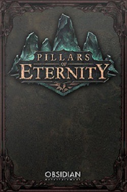

Pillars of Eternity
Pillars of Eternity is Obsidian Entertainment's isometric, party-based RPG set in the new fantasy world of Eora.

Pillars of Eternity (codenamed Project Eternity) is an isometric viewpoint, party-based RPG meant to be a spiritual successor to the Infinity Engine games such as Baldur's Gate and is developed by Obsidian Entertainment. Players will quest through a original fantasy world based on roughly 16th century medieval technology levels, where magic and power is determined by the quality of a person's soul.
Obsidian's stated goal is to create an experience reminiscent of classic Infinity Engine franchises, such as Icewind Dale, Planescape: Torment, and Baldur's Gate.
The game will be built on the Unity 4 Engine and released on Windows, Mac, and Linux platforms.
Mods will be supported.
0 comments
Be the first to leave a comment!